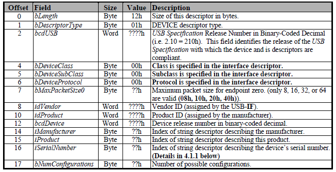
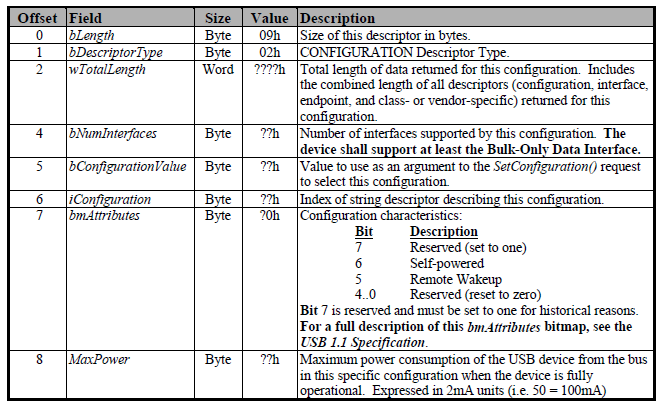
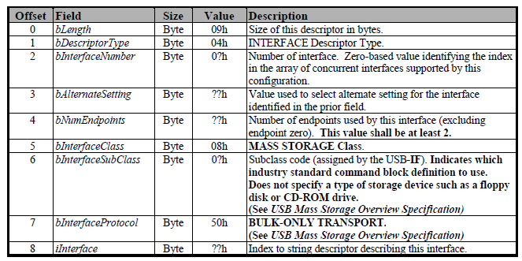
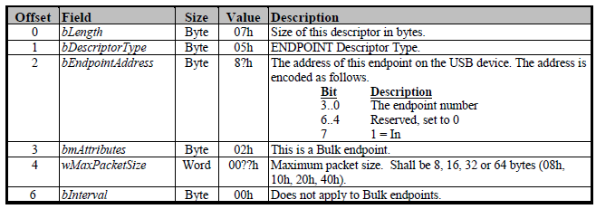
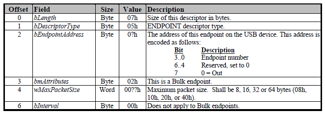

7.12.2. 在线升级模式¶
本芯片在 BROM 阶段支持 USB 升级模式和 UART 升级模式。进入升级模式有两种方式：
按住 UPGRADE-BOOT 按键，然后芯片上电，BROM 进入升级模式
BROM 尝试完所有的启动介质，都没有启动成功，则进入升级模式
由于 BROM 支持两种传输方式：USB 和 UART，因此进入在线升级模式之后，BROM 会轮询检测， 分别尝试建立 USB 连接或者 UART 连接。一旦其中一种连接方式建立成功，则进入对应的升级模式， 不再改变。
7.12.2.1. 协议简述¶
升级通信协议以 USB 升级为基础，扩展支持 UART。通信协议分为三层结构：
应用层
传输层
物理层
其中应用层为物理传输无关的命令通信，传输层将具体的命令和数据进行封装，物理层处理具体物理连接相关的通信操作。
图 7.17 发送数据¶
图 7.18 接收数据¶
7.12.2.2. USB 传输¶
USB 升级功能通过实现基于 USB Bulk 传输的自定义设备来完成的，设备端与主机端通过自定义的 USB 升级协议进行通信。
完整的固件升级流程分为两个阶段，第一个阶段为 BROM 阶段，此阶段主要目的是完成系统运行环境的初始化， 包括初始化 DDR，下载并运行下一级升级程序；第二阶段为 U-Boot 阶段，此阶段实现固件下载和烧录等功能。 这里讨论 BROM 阶段的功能和实现。
7.12.2.2.1. 自定义设备¶
端点（End Point）是设备与主机之间进行数据传输的逻辑接口。自定义的 USB Bulk 传输设备包含下面几个端点：
EP0
EP Bulk-in
EP Bulk-out
EP0 是一个控制端点，数据传输为双向传输，用于对设备进行枚举和基本的控制。在设备完成配置之前， 只有 EP0 端点可用，主机通过 EP0 来发送命令，获取设备的信息，并通过它来配置设备。 EP0 端点没有专门的描述符，只需要在设备描述符中定义它的最大包长度。
EP Bulk-in端点，用来从设备端传输数据和状态给主机端，对设备端而言，是一个数据发送端点。该端点采用 Bulk 传输模式。
EP Bulk-out端点，用来从主机端传输命令和数据给设备端，对设备端而言，是一个数据接收端点。该端点使用 Bulk 传输模式。
初始化过程中，设备需要提供下列描述符。
设备描述符（Device Descriptor）
其中 idVendor 和 idProduct 是必须的。Vendor ID 需要向 USB-IF 购买，Product ID 由厂商自定义。
AIC 购买的 Vendor ID 为 0x33C3，USB 升级所用的 Product ID 为 0x6677（”fw” 的ASCII 码值，表示用于 firmware upgrade）。
配置描述符（Configuration Descriptor）
bNumInterfaces 设置为1，仅支持一个 Bulk-Only 接口。bmAttributes 设置为0x80。
接口描述符（Interface Descriptor）
bNumEndpoints 设置为0，包含Bulk-in, Bulk-out 两个端点。 bInterfaceClass，bInterfaceSubClass 和 bInterfaceProtocol 设置为 0xff ，表示自定义类型。
Bulk-in 端点描述符（Bulk-in Endpoint Descriptor）
Bulk-out 端点描述符（Bulk-out Endpoint Descriptor）

具体的细节可以参考《Universal Serial Bus Mass Storage Class Bulk-Only Transfer》。
7.12.2.3. UART 传输¶
几个关键字符：
名称 |
数值 |
说明 |
|---|---|---|
SOH |
0x01 |
Start of Heading |
STX |
0x02 |
Start of Text |
ACK |
0x06 |
Acknowledge |
DC1 |
0x11 |
Device Control，定义为切换到主机发送状态 |
DC2 |
0x12 |
Device Control，定义为切换到主机接收状态 |
NAK |
0x15 |
Negative Acknowledge |
CAN |
0x18 |
Cancel |
A |
0x41 |
ASCII 字符 ‘A’，从机程序发出的连接信号 |
C |
0x43 |
ASCII 字符 ‘C’，主机程序发出的连接信号 |
7.12.2.3.2. 建立连接¶
在连接检测阶段，由从机程序主动发出就绪信号，主机程序检测并回应的方式建立连接。
图 7.19 建立连接示例¶
从机程序运行起来首先发送字符 A，表示就绪，并等待主机程序回应 ACK。如果等待超时， 则重复发送字符 A，进入等待。该过程循环执行，直到收到主机程序的 ACK 回复。 主机程序就绪时接收到字符 A，则应发送 ACK 建立连接。
从机程序的连接处理流程：
图 7.20 从机端建立连接的流程¶
主机程序的连接处理流程：
图 7.21 主机端建立连接的流程¶
7.12.2.3.3. 掉线检测¶
在没有传输任务的情况下，主机程序应该每隔 0.5秒发送一次 C 进行确认连接状态， 如果收到 ACK，表明连接有效，超时则表明连接已经断开。
从机程序通过命令通信的间隔时间进行掉线检测，即最后一次接收到有效的命令的时间到当前时间之间， 如果间隔超过 3 秒，则认为掉线，重新进入建立连接的状态，主动向外发出字符 A。
图 7.22 掉线检测/连接维护¶
7.12.2.3.4. 数据传输¶
主机程序与从机程序完成连接阶段即进入数据传输阶段。
本协议的数据传输过程的一个特点是，数据传输是一个主机驱动的过程，从机总是被动响应。 即主机程序控制整个数据传输过程，从机程序是一个被动响应命令的程序。这也是为了保持与 USB 升级协议的行为一致。 这个特点与 YMODEM 协议相反。YMODEM 协议是一个从机驱动的协议，从机程序驱动数据的传输。
关键点：
无论是主机程序还是从机程序，只有处于数据传输阶段才可以传输数据
数据传输阶段，主机程序和从机程序都要区分两个状态：数据发送状态和数据接收状态
从机程序不会主动传输数据，传输数据的动作，总是被动触发
状态切换
为了描述方便，在数据传输阶段的状态统一分为两个状态进行描述：
主机发送状态
主机接收状态
默认情况下，系统处于主机发送状态（从机程序的角度为数据接收状态）。 在该状态下主机程序仅向外发送数据帧，并且等待 ACK；从机程序等待读取数据帧， 读取校验正确之后，发送 ACK。
状态切换由主机程序执行。当主机程序需要接收数据时，通过发送 DC2(RECV) 给从机程序， 从机程序回复 ACK 之后，通信状态切换为主机接收状态，此时从机程序可以发送数据帧， 主机程序等待接收数据帧，并且在校验正确后发送 ACK。
当主机程序接收数据完毕，需要发送 DC1(SEND) 给从机程序，将状态切换到主机发送状态。
传输流程
一个典型的数据传输流程如下图。
图 7.23 数据传输示例¶
7.12.2.4. 应用命令¶
BROM 阶段的 USB 和 UART 升级模式所支持的命令列表如下。
命令 |
值 |
功能 |
|---|---|---|
GET_HWINFO |
0x00 |
获取硬件相关信息 |
GET_TRACEINFO |
0x01 |
获取 BROM 的一些调试跟踪信息，AIC内部命令 |
WRITE |
0x02 |
写数据到 CPU 可访问的地址空间 |
READ |
0x03 |
从 CPU 可访问的地址空间读取数据 |
EXEC |
0x04 |
指定位置开始运行程序 |
JTAG_UNLOCK |
0x06 |
解锁 JTAG |
BOOT_CONTINUE |
0x07 |
跳出升级模式的循环，重新从存储设备启动 |
SET_FWC_META |
0x10 |
发送固件组件(Firmware Component)的描述信息 |
GET_BLOCK_SIZE |
0x11 |
获取传输的数据块大小，发送的有效数据须以该块大小为单位 |
SEND_FWC_DATA |
0x12 |
发送固件组件数据 |
GET_FWC_CRC |
0x13 |
获取设备端对所接收数据计算的CRC值，以确认传输是否出错 |
GET_FWC_BURN_RESULT |
0x14 |
获取组件烧录后，设备端的校验结果 |
GET_FWC_RUN_RESULT |
0x15 |
获取组件在运行之后的返回结果 |
7.12.2.5. 升级流程¶
在进行固件升级的流程中，BROM 阶段需要完成几个任务：
下载 Bootloader 到指定位置
运行 Bootloader 进入 Bootloader 的升级模式
对于升级而言，上述每一个部分都是升级固件的组件。制作升级固件时，每一个组件都有一个对应的组件描述信息。 利用这些信息，通过流程的抽象，上述的任务可被一个统一的流程进行处理。
具体的组件处理流程：
SET_FWC_META
工具将对应的组件描述信息发送给设备端。设备端的升级程序依据描述信息，准备接收数据。
GET_BLOCK_SIZE
工具获取本次组件传输的数据块大小。发送组件数据的时候，以这个块大小为单位进行发送。
SEND_FWC_DATA
工具发送组件的数据给设备端。设备端在接收数据的同时，对接收到的数据进行 CRC 校验。 接收完成之后，依据前面接收的组件描述信息，对数据进行具体的操作。在 BROM 阶段， 如果组件是一个可执行程序，则在接收完成之后，运行组件。
GET_FWC_CRC
工具获取设备端所计算的 CRC 校验值，用来判断组件的传输是否正确。
GET_FWC_BURN_RESULT
工具获取设备端对组件数据的烧录是否正确。这是统一流程的一个步骤，BROM 不支持烧录组件，因此直接回复成功。
GET_FWC_RUN_RESULT
工具获取组件运行的返回值。对于可执行组件，则将组件运行返回值传给工具端； 对于不可置信组件，则统一返回0.
进行固件升级的时候，主机从固件包中顺序读取上述组件，按照流程逐个组件发送给设备端，即可完成 BROM 阶段的几个任务。
7.12.2.6. 调试功能¶
BROM 阶段的升级协议提供了几个用于调试的命令。
WRITE
READ
EXEC
这几个命令可以用于芯片验证等调试场景，可以完成诸如读写内存，读写寄存器，以及下载一段程序并执行等操作。